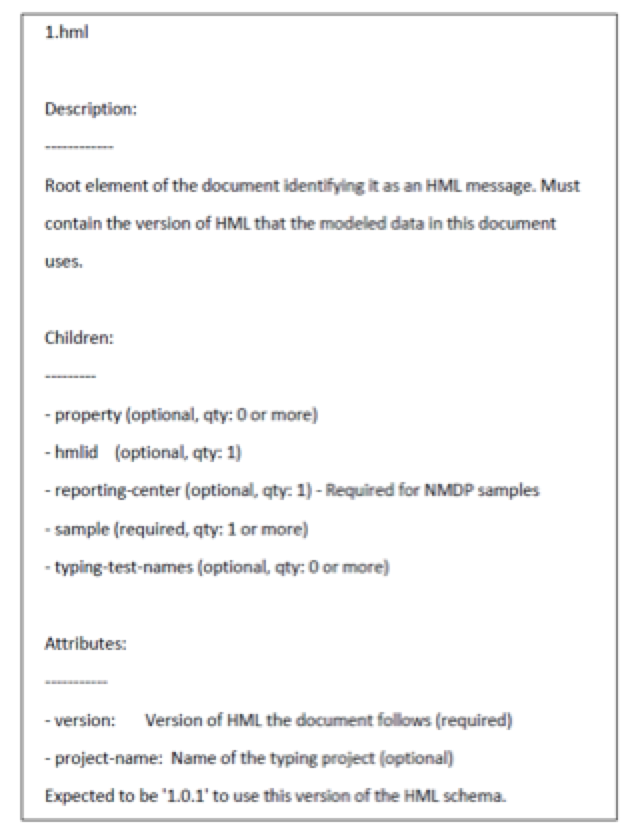

The Biomedical Research Integrated Domain Group (BRIDG) Project
Feb 2014 ‐ Present (National Marrow Donor Program, Masters Project)
Data Modeler
The goal of the BRIDG project was to design a Physical Data Model (PDM) that
facilitates the exchange of donor/patient data between transplant centers. Since each transplant center
has its own data collection mechanism, this PDM is intended to be a standard that can be used by all
transplant centers for fast interchange of information. The specific tasks in this project include:
Facilitated efficient analysis and visualization of patient/donor data by creating Instance Diagrams
from Common Data Elements (CDE).
Enabled migration to a Physical Model by creating an Entity ‐ Relationship (ER) Model for the classes
and attributes present in the BRIDG model.
Aided the creation of DDL by developing a Physical Data Model and made it ANSI compliant by applying
abbreviations to the entity and attribute names.
Simplified ER modeling process and the Agile sprint tracking process by developing a scoring metric
in Python.
Automated the tedious manual entity relationship calculations with Python and Java scripting.
Automated the transfer of essential metadata information of tables and columns between Enterprise
Architect and Power Designer tools using Python scripting.
June 2015 ‐ Present (National Marrow Donor Program)
Data Standards Experimenter
The goal of this project was to analyze NoSQL, open source, document store
databases for efficient storage, retrieval and distribution of lab results for analysis purposes and
compared its benefits to a simple file storage mechanism. The specific tasks in this project include:
Analyzed the pros and cons of existing storage (simple file storage) mechanism used to
store the lab results.
Researched NoSQL, open source document-store databases such as MongoDB, SednaDB and
highlighted the benefits and ease of data storage compared to the existing mechanism.
The Histoimmunogenetics Markup Language (HML) Data Dictionary Project
June 2015 ‐ August 2015 (National Marrow Donor Project)
Data Profiling
The goal of this project was to create a data dictionary containing
description of all elements used in an HML document that helps clinicians, biostatisticians and
data analysts get familiar with the HML format and use it more efficiently. The specific tasks in this
project include:
Extracted description of HML document elements from XSD (XML Schema Definition) using Python script.
Created a data dictionary that contains the description of all elements used in an HML document to
help new users get familiar with the data standard.
• Created a message structure diagram using Altova XMLSpy to supplement the data dictionary for
better understanding the hierarchy of elements used in the HML document.
XML, XSD, Python, Altova XMLSpy

Screenshot from HML Data Dictionary explaining hml element
Inventory Management and Cost Analysis Application
December 2013 ‐ Present (Shubh Cards India)
Software Developer, Web Developer
Shubh Cards is a printing company specializing in designer invitation cards.
The specific tasks in this project include:
Developed an interactive application with database support that greatly reduced the complexity of
manual inventory management and profit/loss analysis, and streamlined the manufacturing process of
designer invitation cards.
Designed a wireframe using HTML, CSS and JavaScript that facilitated the user requirements gathering.
Programmed the functionality of software using Java and Python.
Implementation of File Transfer Protocol (FTP) using TCP Sockets
June 2015 ‐ July 2015 (Masters Course Project)
Programmer
Simulated File Transfer Protocol (FTP) using TCP sockets that transfers a file as packets between two
different machines, in C programming language and developed an understanding of emails and chat services.
Analyzed the impact of factors such as packet size, sending window size, maximum sequence number on
the performance of Go-Back-N (GBN) Sliding Window Protocol.
Evaluated patents and scientific journals and performed a comparative
analysis of Image Storage in Instagram vs traditional Database Management Systems.
An Artificial Intelligence Simulated Game Based on Uniform Cost Search and Greedy Search in a
Maze Environment
Oct 2013 ‐ Dec 2013 (Masters Course Project)
Programmer
A thief enters a 10x10 maze and uses Uniform Cost Search to find a treasure
and exit the maze while avoiding a security officer who guards the treasure and uses Greedy Best First Search
to track and nab the thief.
Oct 2012 ‐ May 2013 (Undergraduate Senior Design Project)
Developer, Performance Analysis
Proposed a new architecture for text independent speaker verification system that can be used to
verify the claimed identity of the speaker, and can be applied in forensic, surveillance and
online reservation systems.
Tested the architecture in media such as microphone, telephone and verified its functionality using MATLAB.